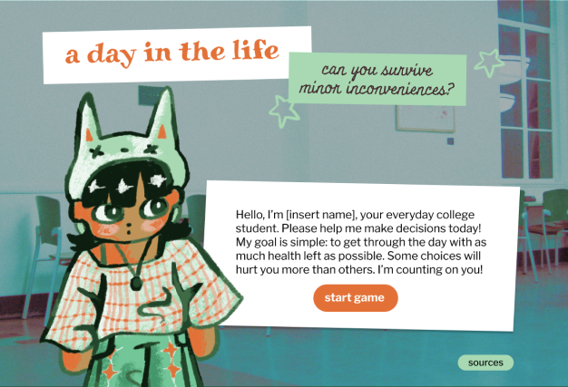

Start Screen
Changes Made
One of my users during user testing felt stressed to make decisions because they were under the impression that chosing the wrong option would instantly kill you. This is not the case for my game, so I specifically needed to outline the fact that certain decisions will damage you more than others. I added an example of this (to be further edited) in the star/instructions slide.
Additionally, during my testing, I noted that no one checked the source page (most likely because they were not interested) but also probably because my old source button did not look like a button at all and was not intuitive to click on. One of the people who left feedback on my project also commented that the source button left after starting the game (which was intentional but I acknowledge this choice appears like a bug to people) so I just went ahead and added it to the entire game.
Death Screen

Changes Made
I did not make many changes to this overlay. One of my users noted that they would prefer something more like the game Persona, which uses a variety of different visual cues to indicate that the day is coming to an end. Currently, my game has no way for users to know where they are in terms of the day, so I wanted to add a progress bar on the bottom of the screen to better help with usability.
Dinner Screen
Changes Made
This is an example of another question I may add to my game. I'm thinking of adding 1-2 questions. I surveyed my users to note some common pain points and means of comfort that college students experience on a day to day. The purpose of this game is to be a comical way for you to view your daily life from an outside perspective and maybe question the ways that you prioritize productivity over your own health.
In this way, I want the game to closely reflect real scenarios that many college students go through. A common stressor users noted was having to feed yourself multiple times a day (ie. cooking is annoying, but it also sucks to pay for food).
Note that the background also got darker. Similar to what I spoke about in the previous screen, making it look more like 'night' can help signal to the user that they are reaching the end of the day. This may lower some of the stress users feel to 'make the right decisions' because there is more of an understanding on where the end goal is.
Congrats Screen
Changes Made
One of my users died twice, with one being the question right before the congrats screen. As a result of this, she spent the most time playing this game. Once she finally got to the congrats screen, she seemed slightly underwhelmed and commented "oh, that's it?" Rather than getting this reaction, I want users to feel excited about completing the game, and so I wanted to add more positive feedback. I plan to do this by adding a fun little "you won~" tune and see if I can add in some confetti.